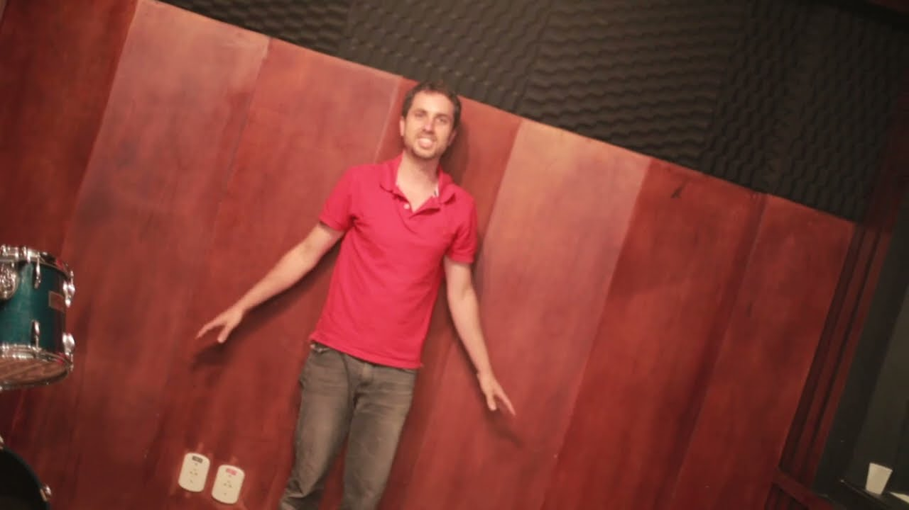
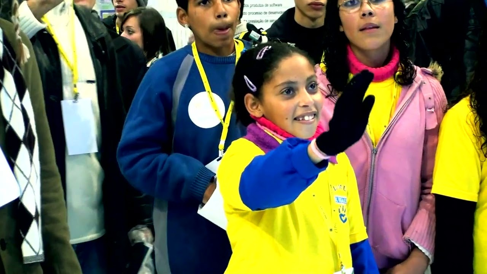

corpo-orquestra
body-orchestra
Alexandre Rangel + Luiz Oliviéri, 2011Software para performance sonora. Sound performance software.

desenvolvimento do corpo-orquestra
corpo-orchestra development
Desenvolvimento com Processing + Ableton Live.
corpo-orquestra no 12º FISL
Fórum Internacional de Software Livre (Porto Alegre)Soundtrack: Komka (As you say)
corpo-orquestra at the 12º FISL
International Free Software Forum (Porto Alegre)Soundtrack: Komka (As you say)